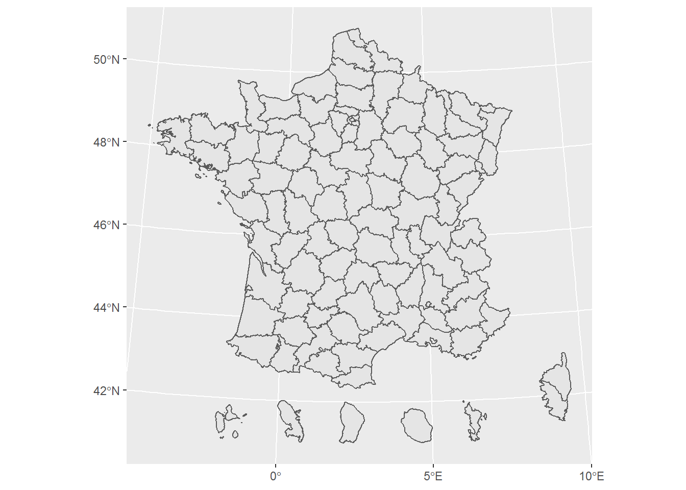
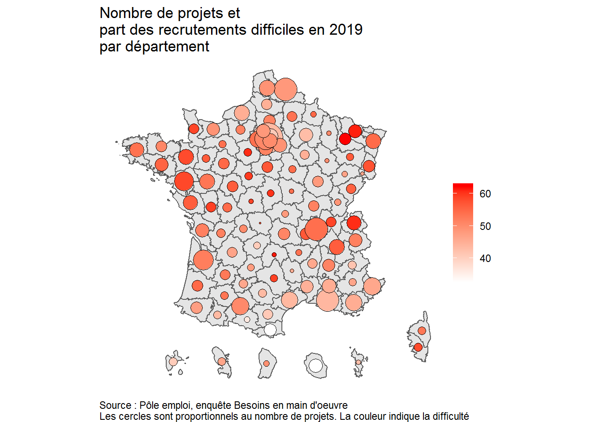

3 Réaliser les cartes
3.1 Le bloc commun
On utilise le package ggplot2 (inclus dans le tidyverse chargé au début) qui nous permet de faire des graphiques par couches.
Dans un premier temps, on va lui spécifier quelles sont les données à utiliser, cela nous affiche la carte vide.
ggplot() +
geom_sf(data = bmo_2019_dep_shp) # l'instruction geom_sf() permet d'afficher un objet spatial
3.2 Carte choroplèthe
Le type de carte le plus simple à réaliser sont les cartes par aplats de couleur ou “choroplèthe”. Pour chaque zone, on va représenter la valeur par une couleur.
On peut ensuite lui dire quelle valeur on souhaite afficher, par exemple la difficulté de recrutement en classes. C’est une variable catégorielle qui s’affiche donc comme telle.
ggplot() +
geom_sf(data = bmo_2019_dep_shp, # on précise la donnée à prendre par data =
aes(fill = part_diff_classes)) # les variables à utiliser sont toujours mises dans un bloc aes() (pour aesthetics)
On va ensuite rajouter différentes couches. Tout d’abord pour gérer l’échelle.
ggplot() +
geom_sf(data = bmo_2019_dep_shp,
aes(fill = part_diff_classes)) +
scale_fill_manual(name = "", # chaque échelle commence par scale_*
values = c("#ffb59a", "#ff7d4d", "#ff4500", "#cc3700")) # elle s'applique à un élément de aes, ici fill (remplissage), avec un type, ici manual puisqu'on définit manuellement
On va ensuite ajouter des élements de titre et de légende par exemple, ainsi qu’un thème pour avoir un fond blanc.
ggplot() +
geom_sf(data = bmo_2019_dep_shp,
aes(fill = part_diff_classes)) +
scale_fill_manual(name = "",
values = c("#ffb59a", "#ff7d4d", "#ff4500", "#cc3700")) + # on lui précise des couleurs avec leurs codes
labs(title = "Part des recrutements difficiles en 2019 \npar département", # labs sert à préciser le titre, la légende, etc..
caption = "Source : Pôle emploi, enquête Besoins en main d'oeuvre") +
theme_void() + # on applique un thème blanc
theme(plot.caption = element_text(hjust = 0)) # on lui précise de mettre la légende à gauche
On peut faire de même avec une variable numérique. L’échelle va alors être continue et il faut préciser les couleurs qu’on souhaite en bornes.
ggplot() +
geom_sf(data = bmo_2019_dep_shp,
aes(fill = part_diff)) +
scale_fill_gradient(name = "", # le scale ici est un gradient, donc une suite continue de valeurs
low = "white", high = "purple") + # on va en préciser les bornes inférieures et supérieures
theme_void() 
On peut ensuite exporter cette carte en cliquant sur Export.
3.3 Carte avec cercles proportionnels
Un autre type de carte représente chaque valeur par un cercle proportionnel et éventuellement une couleur.
Pour la réaliser, on va construire un jeu de données localisé au niveau du centroïde (barycentre) de chaque zone. On repart de la table jointée.
bmo_2019_dep_shp_centre <- bmo_2019_dep_shp %>%
st_centroid() # cette fonctionne transforme un polygone en son centroid (un point)## Warning in st_centroid.sf(.): st_centroid assumes attributes are constant over geometries of xOn va ensuite afficher la carte et au dessus les points, en tant que deuxième couche, en lui précisant qu’on souhaite que la taille soit proportionnelle au nombre de projets et la couleur à la difficulté.
ggplot() +
geom_sf(data = bmo_2019_dep_shp) + # on affiche une première fois les zones
geom_sf(data = bmo_2019_dep_shp_centre, aes(size = nb_proj_tot, color = part_diff)) # puis les points, en précisant leur taille et couleur
De la même façon que précédemment, on va régler les caractéristiques avec des échelles. En variant la forme (shape), on peut afficher des carrés, des triangles, etc.
ggplot() +
geom_sf(data = bmo_2019_dep_shp) +
geom_sf(data = bmo_2019_dep_shp_centre, aes(size = nb_proj_tot,
fill = part_diff),
shape = 21, color = "black") + # on en précise la forme (un rond à remplir avec fill)
scale_fill_gradient(name = "", low = "white", high = "red") +
scale_size_continuous(range = c(0.5, 12)) +
labs(title = "Nombre de projets et \npart des recrutements difficiles en 2019 \npar département",
caption = "Source : Pôle emploi, enquête Besoins en main d'oeuvre \nLes cercles sont proportionnels au nombre de projets. La couleur indique la difficulté") +
guides(size = FALSE) + # guides sert à dire de masquer la légende de taille
theme_void() +
theme(plot.caption = element_text(hjust = 0))
3.4 Ajouter les valeurs
Pour afficher les valeurs sur la carte, on repart des centroïdes. On en extrait les coordonnées pour avoir pour chaque point, localisé par un X et un Y, une valeur à afficher.
bmo_2019_dep_shp_centre_label <- bmo_2019_dep_shp_centre %>%
st_coordinates() %>% # on récupère les coordonnées des centroids
as_tibble() %>%
bind_cols(part_diff = bmo_2019_dep_shp_centre$part_diff) %>% # on ajoute la colonne à afficher
mutate(part_diff = paste0(round(part_diff, 0), "%")) # on l'arrondi à 0 en ajoutant un % derrière
bmo_2019_dep_shp_centre_label## # A tibble: 101 x 3
## X Y part_diff
## <dbl> <dbl> <chr>
## 1 881439. 6558221. 59%
## 2 740400. 6940204. 53%
## 3 714465. 6588216. 48%
## 4 959608. 6339443. 47%
## 5 958609. 6401410. 42%
## 6 1030352. 6324028. 46%
## 7 812754. 6406862. 46%
## 8 818627. 6947523. 55%
## 9 577731. 6203547. 36%
## 10 786154. 6801093. 45%
## # ... with 91 more rows